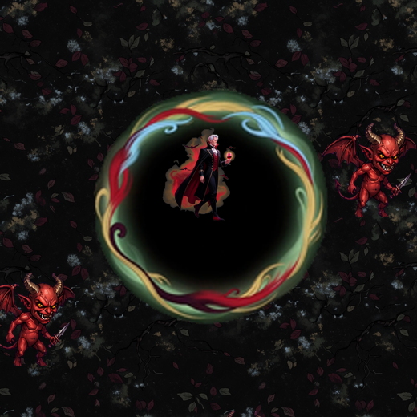
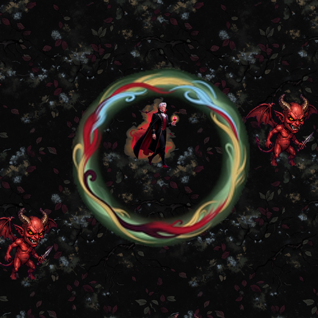
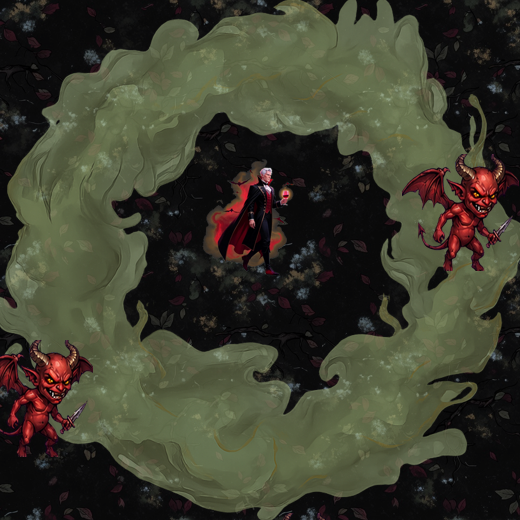

先講 bug：現行光環的中心是不透明的黑色
三個版本並排

① 現行：中心整塊黑

② 修好中心（已套用）

③ 迷霧版試樣
- 怎麼發現的
- 做這次比較時把現行素材擺到地面上才看出來。量過確認：中心 40×40 像素的 alpha 平均是 255、RGB 是 0——不透明的純黑
- 成因
- 環把中間圍起來了，去背用的是「邊界連通」判斷，圍起來的那一塊連不到畫布邊界，所以被當成主體留著。跟血月獠牙那支是同一類問題
- 影響
- 大蒜光環冷卻只有 0.3–0.5 秒，等於幾乎全程都有一塊黑色圓盤蓋在玩家腳下的地面上
- 已修
- 用亮度門檻把中心挖掉，其他部分完全沒動。修完中心 alpha = 0，整體不透明像素從 24% 降到 13%
迷霧版：做得出來
生成出來的原圖
需要後製
- 結論
- 俯視、環繞一圈、邊緣蓬鬆翻騰不規則——構圖跟你的參考圖對得上，去背也乾淨
- 但太亮
- 原圖近乎不透明的乳白，擺進遊戲會變成整個畫面最亮的東西，把哥德暗色調整個洗掉。上面第 ③ 張是壓到 55% 透明度、往大蒜色（降紅降藍留綠）推、再壓暗一階之後的樣子
- 顏色
- 米白偏淡黃綠，跟舊金 #E8C46A 是鄰近色，不會跳色；比參考圖的冰藍更貼「大蒜」
要往下做的話，有兩個代價要先知道
- 霧的外緣是模糊的，而傷害範圍是精確的。前一批特效我們花了力氣讓「視覺半徑 ÷ 傷害半徑 = 1.00」，就是為了不讓玩家誤判打得到多遠。霧沒有明確的外緣，這個精確度一定會掉。折衷做法是在霧裡藏一道很淡的實邊，正好落在傷害半徑上——看起來還是霧，但邊界仍然讀得出來。
- 霧環比細環厚得多，會蓋住站在環上的敵人。大蒜光環是貼身近戰用的，敵人本來就會站在環裡。可以靠透明度壓低來緩解，但不可能完全避免。
成本
- 這張試樣：1 張 Grok 生圖 ＋ 1 次 OpenAI 去背 ≈ $0.2（已花）。
- 要做成真的會翻騰的動畫，走影片路線 4 秒 720p ≈ $0.32，加上拆格去背。翻騰流動這種有機的動態正是影片路線最擅長的，靜態圖循環播不出「翻騰」。
- 沒有遇到 Grok 額度不足。
目前狀態
- 現行光環的中心黑塊已經修掉並套用（那是 bug，不是改設計，外觀完全沒動）。
- 迷霧版只有這一張試樣，沒有進遊戲，等你決定要不要花那 $0.32 產動畫。